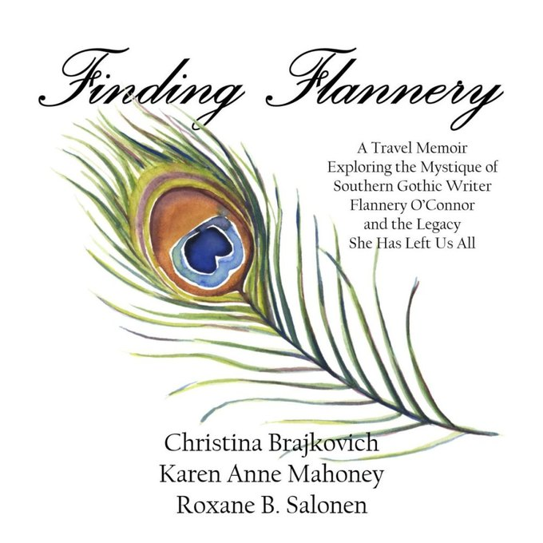
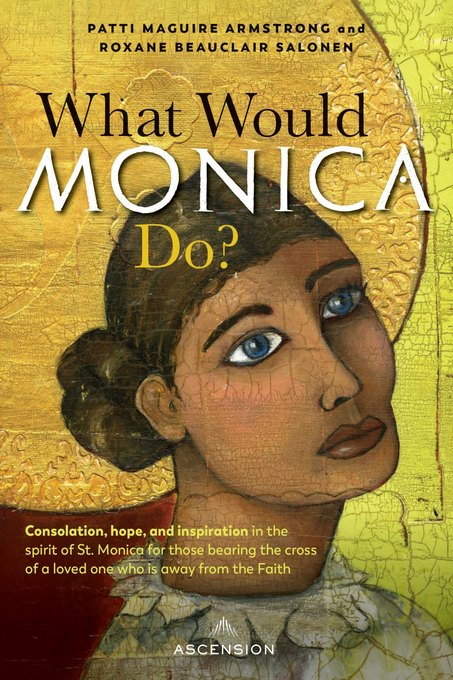
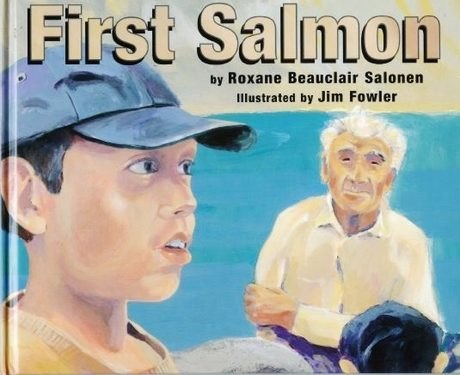
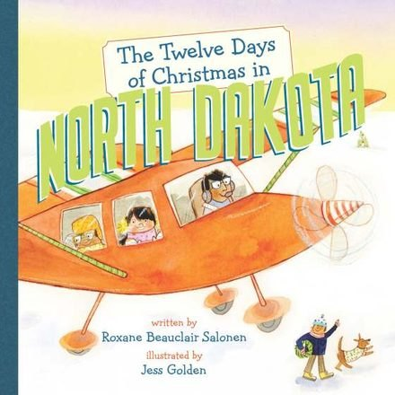
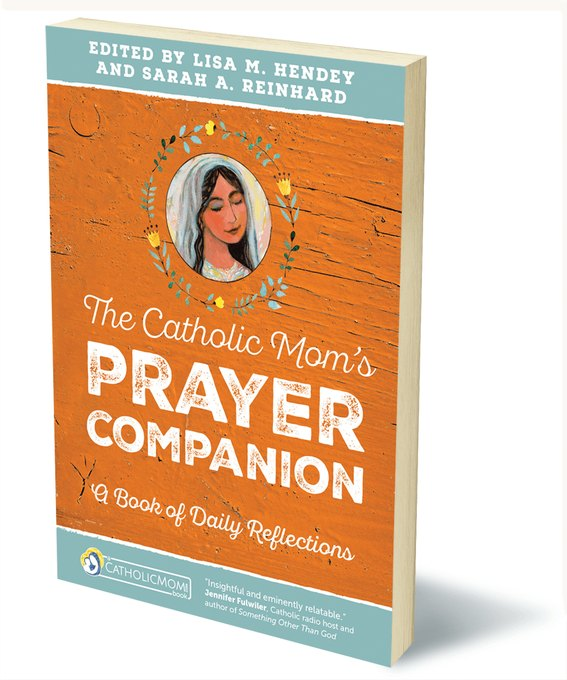

Memoir · 2025
Finding Flannery
A travel memoir tracing the mystique of Southern Gothic writer Flannery O’Connor and the legacy she left us all. 2026 CMA Book Award winner (2nd place, memoir); NFPW honor coming this fall.
View the bookEight books, from P is for Peace Garden to the award-winning Finding Flannery — picture books, devotionals, and memoir, written and co-written over two decades.

A travel memoir tracing the mystique of Southern Gothic writer Flannery O’Connor and the legacy she left us all. 2026 CMA Book Award winner (2nd place, memoir); NFPW honor coming this fall.
View the book
Consolation and hope for those carrying the cross of a loved one who has wandered from the Faith. 1st place, 2023 CMA awards in two categories, plus state and national NFPW honors.
View the bookRamona Treviño’s journey out of Planned Parenthood and back to faith — co-written with Roxane.
View the bookAn award-winning North Dakota alphabet — the prairie state, A to Z, for young readers.
View the book
A tender story of tradition and belonging, illustrated by Jim Fowler.
View the book
A playful prairie Christmas for young readers, illustrated by Jess Golden.
View the book365 daily devotions for Catholic women — a collaboration with writers from Women in the New Evangelization.
View the book
A book of daily reflections (Ave Maria Press), gathered with the CatholicMom.com community.
View the bookRoxane has also collaborated on prayer companions and anthologies with Women in the New Evangelization (W.I.N.E.) and CatholicMom.com.
Looking for a signed copy or a bulk order for your parish or book club? Get in touch